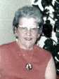

fiche familiale
*******************************************************************************
|  |
Annette Henri décède à l'âge de 69 ans. Naissance le 18 avril 1908 à Ste-Rose-de-Watford Parrain son grand oncle Pierre-King Provost, marraine sa grande tante Délina Nadeau. Décès le 26 août 1977 à Verdun Sépulture le 29 août 1977 au cimetière Notre-Dame-des-Neiges de Montréal. Père: Eugène Henri Mère: Graziella Provost (sa famille) |
Mariage le 23 octobre 1928 à St-Jean-L'Évangéliste de Macamic
 |
Époux: Wilfrid Laroche décède à l'âge de 62 ans. Naissance le 28 décembre 1905 à Issoudun, cté Lotbinière Baptême: 30 déc 1905 à Notre-Dame d'Issoudun Baptisé Joseph, Wilfrid, Hildevert. Parrain Hildevert Houde, marraine Hedwidge Charest. décès le 9 décembre 1968 à Macamic Sépulture au cimetière de Val D'Or Décédé au sanatorium de Macamic, suite à une longue maladie qui dura 32 ans, la sclérose en plaques. Père: Joseph-Arthur Laroche Mère: Eugénie Charest (sa famille) |
Lors de leur mariage en 1928, elle enseignait à l'école de Launay, ils allèrent demeurer à Barraute car Wilfrid travaillait à la mine Vénus Gold Mine de Barraute. Puis en janvier 1935 il déménagèrent à Val D'Or où ils furent les 3ième résidents de la ville, Wilfrid
à travaillé à la mine Lamaque avant d'ouvrir sa buanderie.
*******************************************************************************
Enfant 1Claudette Laroche
Naissance le 6 juin 1937 à Val-D'Or
Baptisée Marie, Claudette, Fabiola.
Parrain Joseph St-Pierre, marraine Fabiola Laroche.
Mariage le 1er juin 1957 à St-Léon de Westmount
| Conjoint: Robert Turner décède à l'âge de 67 ans. Naissance: 7 nov 1934 à Montréal Dit "Bob" Décès: 15 sep 2002 à Pointe-aux-Trembles Sépulture: 18 sep 2002 au cimetière Notre-Dame-des-Neiges de Montréal Père: Armand Turner Mère: Armandine Provencal |
Enfant 1 Céline Turner
Enfant 2 Michel Turner
Conjointe: Sylvie Sansfaçon
Marie-Claude Turner
Caroline Turner
Dominique Turner
Véronique Turner
Enfant 3 Danielle Turner
Conjoint: François Reid
Damien Reid
Enfant 4 Pierre Turner
Conjointe: Nathalie ?
Mélissa Turner
-------------------------------------------------------------------------------